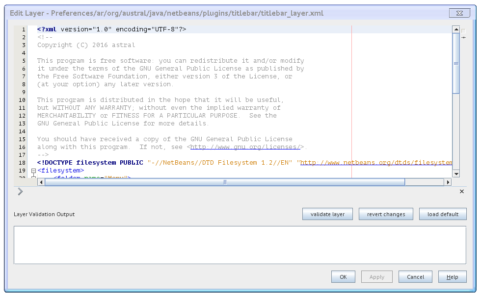

Title Bar Editor Layer
layer editor dialog accesible throw the menu Tools > Options > Appearance > Title Bar.

This editor dialog allows to edit the content of the xml layers used by the title bar project.
The configuration layer is always enabled.
The title bar layer is only enabled when the title bar is hidden.
Layer Validation Output
display the validation status of the layer content.
validate layer
validate the current xml layer, displaying the results on the layer validation output.
revert changes
revert the changes done in the current layer.
load default
load the default value for the current layer.
Some Configuration Layer XML Snippets
<foldername="Menu"><!-- display show title bar action in the view menu --><foldername="View"><filename="ar-org-austral-java-netbeans-plugins-titlebar-ShowTitleBarAction.shadow"><!--ar.org.austral.java.netbeans.plugins.titlebar.ShowTitleBarAction--><attrname="originalFile"stringvalue="Actions/View/ar-org-austral-java-netbeans-plugins-titlebar-ShowTitleBarAction.instance"/><attrname="position"intvalue="1300"/></file></folder></folder>
add the menu item Show Title Bar at the menu View, at the 1300 position.
Some Title Bar Layer XML Snippets
<foldername="Menu"><!-- display minimize, restore, maximize and close buttons box in the menu bar --><filename="ar-org-austral-java-netbeans-plugins-titlebar-TitleBarButtons.instance"><attrname="instanceCreate"methodvalue="ar.org.austral.java.netbeans.plugins.titlebar.TitleBar.getTITLEBARBUTTONS"/><attrname="position"intvalue="2147483647"/></file></folder>
add the custom title bar buttons to the menu bar at the 2147483647 position, which means maximun value to the right.
a zero or a negative value would place the title bar buttons to the left, relative to the others menu bar elements.
the icon set is based on the netbeans api class, see ,
so any change or customization that affects to those objects, for
example a custom look and feel, are expected to be reflected by
the custom title bar buttons's displaying icons.
the minimize icon correspond to the .
the restore icon correspond to the .
the maximize icon correspond to the .
the close icon correspond to the .
<foldername="Menu"><!-- display the main window title as a label in the menu bar --><filename="ar-org-austral-java-netbeans-plugins-titlebar-TitleBarTitleLabel.instance"><attrname="instanceCreate"methodvalue="ar.org.austral.java.netbeans.plugins.titlebar.TitleBar.getTITLEBARTITLELABEL"/><attrname="position"intvalue="8005"/></file></folder>
add a custom text label that display the main window title.
a property change listener is added to the main window,
so it is supposed to be refreshed when the main window title is changed.
<foldername="Menu"><!-- display an horizontal spacer glue for spacing and center the main window title label --><filename="TitleBarLabelSpacerGlue.instance"><attrname="instanceCreate"methodvalue="javax.swing.Box.createHorizontalGlue"/><attrname="position"intvalue="8000"/></file></folder>
add an horizontal spacer glue, see
, for spacing and center the title bar title label.
by default it is placed between the last menu and the quick search box.
For more information about the netbeans platform xml layers and the menu bar items see
and .